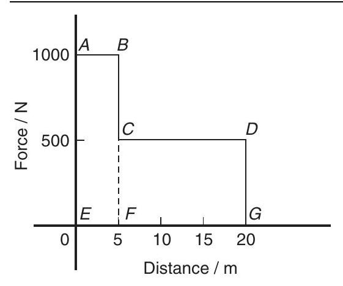
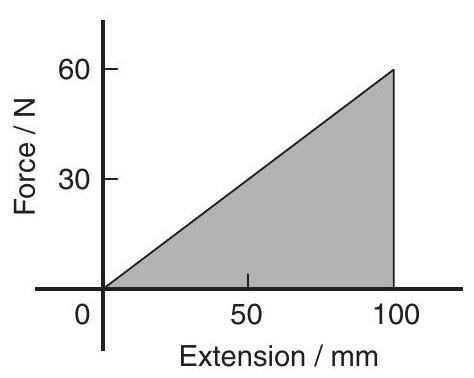
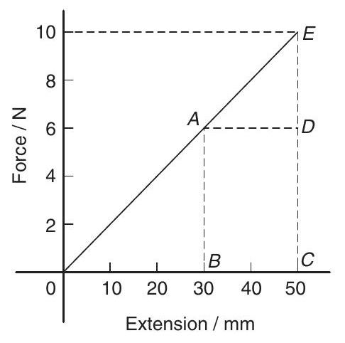
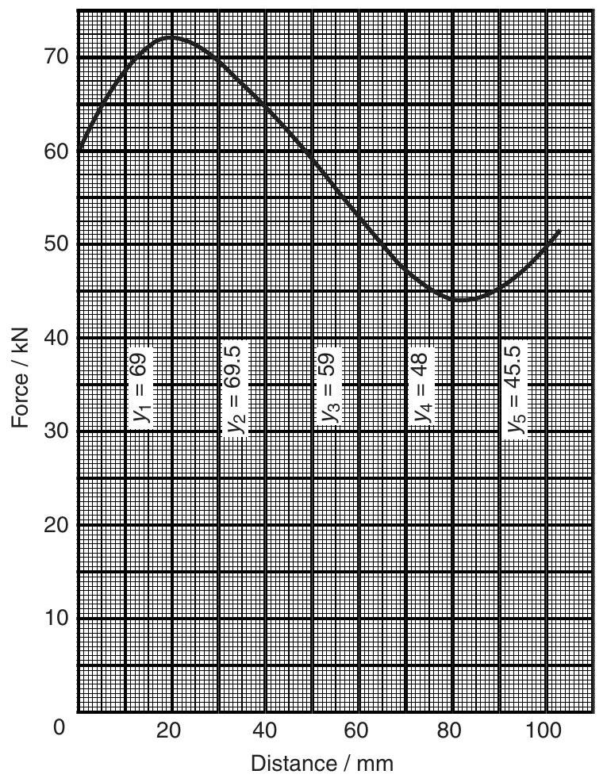
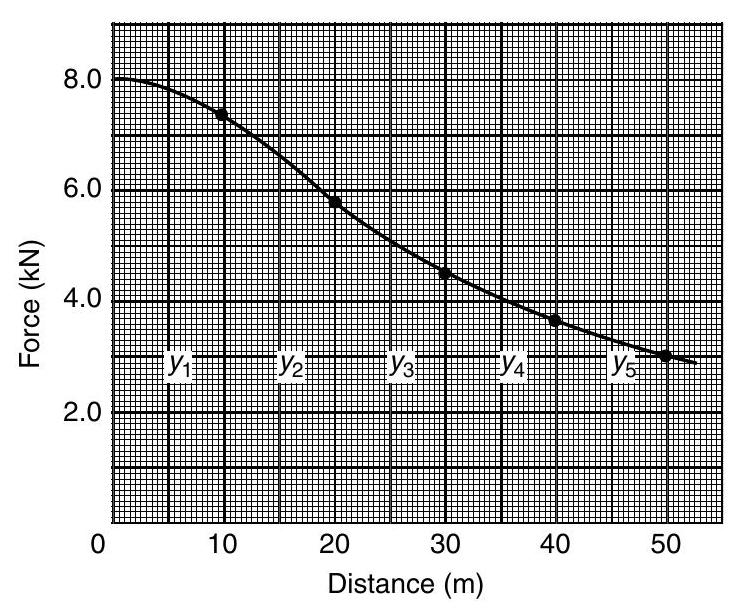
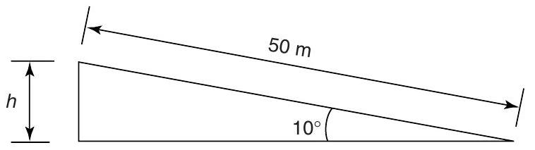

Mechanical science - Work, energy and power
Work, energy and power
At the end of this chapter you should be able to:
- define work and state its unit
- perform simple calculations on work done
- appreciate that the area under a force/ distance graph gives work done
- perform calculations on a force/distance graph to determine work done
- define energy and state its unit
- state several forms of energy
- state the principle of conservation of energy and give examples of conversions
- define and calculate efficiency of systems
- define power and state its unit
- understand that power $=$ force $\times$ velocity
- perform calculations involving power, work done, energy and efficiency
- define potential energy
- perform calculations involving potential energy $=mgh$
- define kinetic energy
- perform calculations involving kinetic energy $=\frac{1}{2}mv^{2}$
- distinguish between elastic and inelastic collisions
- perform calculations involving kinetic energy in rotation $=\frac{1}{2}I\omega^{2}$
14.1 Work
If a body moves as a result of a force being applied to it, the force is said to do work on the body. The amount of work done is the product of the applied force and the distance, i.e.
The unit of work is the joule, $\mathbf{J}$, which is defined as the amount of work done when a force of 1 Newton acts for a distance of 1 m in the direction of the force. Thus,
If a graph is plotted of experimental values of force (on the vertical axis) against distance moved (on the horizontal axis) a force/distance graph or work diagram is produced. The area under the graph represents the work done.
For example, a constant force of 20 N used to raise a load a height of 8 m may be represented on a force/distance graph as shown in Figure 14.1. The area under the graph shown shaded represents the work done. Hence
Figure 14.1
Similarly, a spring extended by 20 mm by a force of 500 N may be represented by the work diagram shown in Figure 14.2, where
Figure 14.2
It is shown in Chapter 13 that force $=$ mass $\times$ acceleration, and that if an object is dropped from a height it has a constant acceleration of around $9.81\mathrm{~m}/ \mathrm{s}^{2}$. Thus if a mass of 8 kg is lifted vertically 4 m , the work done is given by:
The work done by a variable force may be found by determining the area enclosed by the force/distance graph using an approximate method such as the midordinate rule.
To determine the area $ABCD$ of Figure 14.3 using the mid-ordinate rule:
- Divide base $AD$ into any number of equal intervals, each of width $d$ (the greater the number of intervals, the greater the accuracy)
- Erect ordinates in the middle of each interval (shown by broken lines in Figure 14.3)
- Accurately measure ordinates $y_{1}, y_{2}, y_{3}$, etc.
- Area $ABCD=d(y_{1}+y_{2}+y_{3}+y_{4}+y_{5}+y_{6})$
Figure 14.3
In general, the mid-ordinate rule states:
Problem 1. Calculate the work done when a force of 40 N pushes an object a distance of 500 m in the same direction as the force.
i.e. work done $\boldsymbol{=}\mathbf{20}\mathbf{~ kJ}$
Problem 2. Calculate the work done when a mass is lifted vertically by a crane to a height of 5 m , the force required to lift the mass being 98 N .
When work is done in lifting then:
Weight is the downward force due to the mass of an object. Hence
Problem 3. A motor supplies a constant force of 1 kN which is used to move a load a distance of 5 m . The force is then changed to a constant 500 N and the load is moved a further 15 m . Draw the force/distance graph for the operation and from the graph determine the work done by the motor.
The force/distance graph or work diagram is shown in Figure 14.4. Between points $A$ and $B$ a constant force of 1000 N moves the load 5 m ; between
Figure 14.4
points $C$ and $D$ a constant force of 500 N moves the load from 5 m to 20 m
Problem 4. A spring, initially in a relaxed state, is extended by 100 mm . Determine the work done by using a work diagram if the spring requires a force of 0.6 N per mm of stretch.
Force required for a 100 mm extension $=100\mathrm{~mm} \times 0.6\mathrm{~N}/ \mathrm{mm}=60\mathrm{~N}$. Figure 14.5 shows the force/extension graph or work diagram representing the increase in extension in proportion to the force, as the force is increased
Figure 14.5
from 0 to 60 N The work done is the area under the graph, hence
(Alternatively, average force during $$ \text {extension}=\frac{(60-0)}{2}=30\mathrm{~N} $$ and total $$ \text {extension}=100\mathrm{~mm}=0.1\mathrm{~m} $$ hence $$ \begin{aligned} \text {work done} &= \text {average force} \times \text {extension} \\ &=30\mathrm{~N} \times 0.1\mathrm{~m}=3\mathrm{~J})\end{aligned} $$
Problem 5. A spring requires a force of 10 N to cause an extension of 50 mm . Determine the work done in extending the spring (a) from zero to 30 mm , and (b) from 30 mm to 50 mm .
Figure 14.6 shows the force/extension graph for the spring.
(a) Work done in extending the spring from zero to 30 mm is given by area $ABO$ of Figure 14.6, i.e.
Figure 14.6
(b) Work done in extending the spring from 30 mm to 50 mm is given by area $ABCE$ of Figure 14.6, i.e.
Problem 6. Calculate the work done when a mass of 20 kg is lifted vertically through a distance of 5.0 m . Assume that the acceleration due to gravity is $9.81\mathrm{~m}/ \mathrm{s}^{2}$.
The force to be overcome when lifting a mass of 20 kg vertically upwards is mg , i.e. $20 \times 9.81=196.2\mathrm{~N}$ (see Chapter 13). $$ \begin{aligned} \text {work done} &= \text {force} \times \text {distance} \\ &=196.2 \times 5.0=\mathbf{981}\mathbf{~ J}\end{aligned} $$
Problem 7. Water is pumped vertically upwards through a distance of 50.0 m and the work done is 294.3 kJ . Determine the number of litres of water pumped. (1 litre of water has a mass of 1 kg ).
Work done $=$ force $\times$ distance, i.e. from which $$ \begin{aligned} 294300 &= \text {force} \times 50.0 \\ \text {force} &= \frac{294300}{50.0}=5886\mathrm{~N} \end{aligned} $$ The force to be overcome when lifting a mass m kg vertically upwards is mg , i.e. $(\mathrm{m} \times 9.81)\mathrm{~N}$ (see Chapter 13). Thus $5886=\mathrm{m} \times 9.81$, from which mass, $$ \mathrm{m}=\frac{5886}{9.81}=600\mathrm{~kg} $$ Since 1 litre of water has a mass of $1\mathrm{~kg}, 600$ litres of water are pumped.
Problem 8. The force on a cutting tool of a shaping machine varies over the length of cut as follows:
| Distance (mm) | 0 | 20 | 40 | 60 | 80 | 100 |
| Force (kN) | 60 | 72 | 65 | 53 | 44 | 50 |
Determine the work done as the tool moves through a distance of 100 mm .
The force/distance graph for the given data is shown in Figure 14.7. The work done is given by the area under the graph; the area may be determined by an approximate method. Using the mid-ordinate rule, with each strip of width 20 mm , mid-ordinates $y_{1}$, $y_{2}, y_{3}, y_{4}$ and $y_{5}$ are erected as shown, and each is measured.
Figure 14.7
Hence the work done as the tool moves through 100 mm is $\mathbf{5.82}\mathbf{~ kJ}$
Now try the following exercise
Exercise 68 Further problems on work
- Determine the work done when a force of 50 N pushes an object 1.5 km in the same direction as the force. [75 kJ]
- Calculate the work done when a mass of weight 200 N is lifted vertically by a crane to a height of 100 m . [20 kJ]
- A motor supplies a constant force of 2 kN to move a load 10 m . The force is then changed to a constant 1.5 kN and the load is moved a further 20 m . Draw the force/distance graph for the complete operation, and, from the graph, determine the total work done by the motor. [50 kJ]
- A spring, initially relaxed, is extended 80 mm . Draw a work diagram and hence determine the work done if the spring requires a force of $0.5\mathrm{~N}/ \mathrm{mm}$ of stretch. [1.6 J]
- A spring requires a force of 50 N to cause an extension of 100 mm . Determine the work done in extending the spring (a) from 0 to 100 mm , and (b) from 40 mm to 100 mm . $\left[\begin{array}{ll}\text {(a) 2.5 J} & \text {(b) 2.1 J}\end{array}\right]$
- The resistance to a cutting tool varies during the cutting stroke of 800 mm as follows: (i) the resistance increases uniformly from an initial 5000 N to 10000 N as the tool moves 500 mm , and (ii) the resistance falls uniformly from 10000 N to 6000 N as the tool moves 300 mm . Draw the work diagram and calculate the work done in one cutting stroke. [ 6.15 kJ ]
14.2 Energy
Energy is the capacity, or ability, to do work. The unit of energy is the joule, the same as for work. Energy is expended when work is done. There are several forms of energy and these include:
- Mechanical energy
- Heat or thermal energy
- Electrical energy
- Chemical energy
- Nuclear energy
- Light energy
- Sound energy
Energy may be converted from one form to another. The principle of conservation of energy states that the total amount of energy remains the same in such conversions, i.e. energy cannot be created or destroyed.
Some examples of energy conversions include:
- Mechanical energy is converted to electrical energy by a generator
- Electrical energy is converted to mechanical energy by a motor
- Heat energy is converted to mechanical energy by a steam engine
- Mechanical energy is converted to heat energy by friction
- Heat energy is converted to electrical energy by a solar cell
- Electrical energy is converted to heat energy by an electric fire
- Heat energy is converted to chemical energy by living plants
- Chemical energy is converted to heat energy by burning fuels
- Heat energy is converted to electrical energy by a thermocouple
- Chemical energy is converted to electrical energy by batteries
- Electrical energy is converted to light energy by a light bulb
- Sound energy is converted to electrical energy by a microphone.
- Electrical energy is converted to chemical energy by electrolysis.
Efficiency is defined as the ratio of the useful output energy to the input energy. The symbol for efficiency is $\eta$ (Greek letter eta). Hence
Efficiency has no units and is often stated as a percentage. A perfect machine would have an efficiency of $100 \%$. However, all machines have an efficiency lower than this due to friction and other losses. Thus, if the input energy to a motor is 1000 J and the output energy is 800 J then the efficiency is
Problem 9. A machine exerts a force of 200 N in lifting a mass through a height of 6 m . If 2 kJ of energy are supplied to it, what is the efficiency of the machine?
Work done in lifting mass $$ \begin{aligned} &= \text {force} \times \text {distance moved} \\ &= \text {weight body} \times \text {distance moved} \\ &=200\mathrm{~N} \times 6\mathrm{~m}=1200\mathrm{~J} \\ &= \text {useful energy output}\end{aligned} $$ Energy input $=2\mathrm{~kJ}=2000\mathrm{~J}$ Efficiency, $\eta=\frac{\text {useful output energy}}{\text {input energy}}$ thus $$ \frac{70}{100}=\frac{\text {output energy}}{600\mathrm{~J}} $$ from which, output energy $=\frac{70}{100} \times 600=420\mathrm{~J}$
Problem 10. Calculate the useful output energy of an electric motor which is $70 \%$ efficient if it uses 600 J of electrical energy.
Efficiency, $$ \eta=\frac{\text {useful output energy}}{\text {input energy}} $$ thus $$ \frac{70}{100}=\frac{\text {output energy}}{600\mathrm{~J}} $$ from which, output energy $=\frac{70}{100} \times 600=420\mathrm{~J}$
Problem 11. 4 kJ of energy are supplied to a machine used for lifting a mass. The force required is 800 N . If the machine has an efficiency of $50 \%$, to what height will it lift the mass?
$$ \begin{aligned} \text {Efficiency}, & \eta=\frac{\text {useful output energy}}{\text {input energy}} \\ \text {i.e.} & \begin{aligned} \frac{50}{100} &= \frac{\text {output energy}}{4000\mathrm{~J}} \\ \text {from which, output energy} &= \frac{50}{100} \times 4000 \\ &=2000\mathrm{~J} \\ &= \text {force} \times \begin{array}{l}\text {distance} \\ \text {moved},\end{array} \\ \text {Work done} & 2000\mathrm{~J} &=800\mathrm{~N} \times \text {height},\end{aligned} \\ \text {hence} & \text {height} \\ \text {from which,} & \frac{2000\mathrm{~J}}{800\mathrm{~N}}=\mathbf{2.5}\mathbf{~ m.}\end{aligned} $$
Problem 12. A hoist exerts a force of 500 N in raising a load through a height of 20 m . The efficiency of the hoist gears is $75 \%$ and the efficiency of the motor is $80 \%$. Calculate the input energy to the hoist.
The hoist system is shown diagrammatically in Figure 14.8.
Figure 14.8
For the gearing,
from which, the input energy to the gears $$ =10000 \times \frac{100}{75}=13333\mathrm{~J}.$$ The input energy to the gears is the same as the output energy of the motor. Thus, for the motor, efficiency $\quad=\frac{\text {output energy}}{\text {input energy}}$ i.e. $\quad \frac{80}{100}=\frac{13333}{\text {input energy}}$ Hence input energy to the hoist $$ =13333 \times \frac{100}{80}=16667\mathrm{~J}=\mathbf{16.67}\mathbf{~ kJ} $$
Now try the following exercise
Exercise 69 Further problems on energy
- A machine lifts a mass of weight 490.5 N through a height of 12 m when 7.85 kJ of energy is supplied to it. Determine the efficiency of the machine. [75%]
- Determine the output energy of an electric motor which is $60 \%$ efficient if it uses 2 kJ of electrical energy. [1.2 kJ]
- A machine that is used for lifting a particular mass is supplied with 5 kJ of energy. If the machine has an efficiency of 65% and exerts a force of 812.5 N to what height will it lift the mass? [ 4 m ]
- A load is hoisted 42 m and requires a force of 100 N . The efficiency of the hoist gear is $60 \%$ and that of the motor is $70 \%$. Determine the input energy to the hoist. [10 kJ]
14.3 Power
Power is a measure of the rate at which work is done or at which energy is converted from one form to another.
or
The unit of power is the watt, $\mathbf{W}$, where 1 watt is equal to 1 joule per second. The watt is a small unit for many purposes and a larger unit called the kilowatt, kW , is used, where $1\mathrm{~kW}=1000\mathrm{~W}$. The power output of a motor, which does 120 kJ of work in 30 s , is thus given by $$ \text {power}=\frac{120 \times 10^{3}\mathrm{~J}}{30\mathrm{~s}}=4000\mathrm{~W}=4\mathrm{~kW} $$ Since $$ \text {work done}= \text {force} \times \text {distance}, $$ then $$ \begin{aligned} \text {power} &= \frac{\text {work done}}{\text {time taken}} \\ &= \frac{\text {force} \times \text {distance}}{\text {time taken}} \\ &= \text {force} \times \frac{\text {distance}}{\text {time taken}}\end{aligned} $$ However, $$ \frac{\text {distance}}{\text {time taken}}= \text {velocity} $$ Hence $$ \text {power}= \text {force} \times \text {velocity} $$
Problem 13. The output power of a motor is 8 kW . How much work does it do in 30 s ?
$$ \text {Power}=\frac{\text {work done}}{\text {time taken}} $$ from which, work done $=$ power $\times$ time $$ \begin{aligned} &=8000\mathrm{~W} \times 30\mathrm{~s} \\ &=240000\mathbf{~J}=\mathbf{240}\mathbf{~ kJ}\end{aligned} $$
Problem 14. Calculate the power required to lift a mass through a height of 10 m in 20 s if the force required is 3924 N .
Work done $=$ force $\times$ distance moved $=3924\mathrm{~N} \times 10\mathrm{~m}=39240\mathrm{~J}$ $$ \begin{aligned} \text {Power} &= \frac{\text {work done}}{\text {time taken}}=\frac{39240\mathrm{~J}}{20\mathrm{~s}} \\ &=1962\mathrm{~W} \text {or} 1.962\mathrm{~kW}\end{aligned} $$
Problem 15. 10 kJ of work is done by a force in moving a body uniformly through 125 m in 50 s . Determine (a) the value of the force, and (b) the power.
(a) Work done $=$ force $\times$ distance, hence $$ 10000\mathrm{~J}= \text {force} \times 125\mathrm{~m}, $$ from which, $$ \begin{aligned} \text {force} &= \frac{10000\mathrm{~J}}{125\mathrm{~m}} \\ &=\mathbf{80}\mathbf{~ N}\end{aligned} $$
(b) Power $=\frac{\text {work done}}{\text {time taken}}=\frac{10000\mathrm{~J}}{50\mathrm{~s}}=\mathbf{200}\mathbf{~ W}$
Problem 16. A car hauls a trailer at $90\mathrm{~km}/ \mathrm{h}$ when exerting a steady pull of 600 N. Calculate (a) the work done in 30 minutes and (b) the power required.
(a) Work done $=$ force $\times$ distance moved. The distance moved in 30 min , i.e. $\frac{1}{2}\mathrm{~h}$, at $90\mathrm{~km}/ \mathrm{h}=45\mathrm{~km}$. Hence, work done $=600\mathrm{~N} \times 45000\mathrm{~m}=$ $\mathbf{27000}\mathbf{~ kJ}$ or $\mathbf{27}\mathbf{~ MJ}$
(b) Power required $$ \begin{aligned} &=\frac{\text {work done}}{\text {time taken}}=\frac{27 \times 10^{6}\mathrm{~J}}{30 \times 60\mathrm{~s}} \\ &=\mathbf{15000}\mathbf{~ W} \text {or}\mathbf{15}\mathbf{~ kW}\end{aligned} $$
Problem 17. To what height will a mass of weight 981 N be raised in 40 s by a machine using a power of 2 kW ?
Hence, $$ \begin{aligned} & \text {Work done}= \text {force} \times \text {distance}. \\ & \text {work done}=981\mathrm{~N} \times \text {height}.\end{aligned} $$ $$ \text {Power}=\frac{\text {work done}}{\text {time taken}} $$ from which, $$ \begin{aligned} \text {work done} &= \text {power} \times \text {time taken} \\ &=2000\mathrm{~W} \times 40\mathrm{~s} \\ &=80000\mathrm{~J}\end{aligned} $$ Hence from which, $$ \begin{aligned} & 80000=981\mathrm{~N} \times \text {height} \\ & \text {height}=\frac{80000\mathrm{~J}}{981\mathrm{~N}}=\mathbf{81.55}\mathbf{~ m}\end{aligned} $$
Problem 18. A planing machine has a cutting stroke of 2 m and the stroke takes 4 seconds. If the constant resistance to the cutting tool is 900 N , calculate for each cutting stroke (a) the power consumed at the tool point, and (b) the power input to the system if the efficiency of the system is $75 \%$.
(a) Work done in each cutting $$ \begin{aligned} \text {stroke} &= \text {force} \times \text {distance} \\ &=900\mathrm{~N} \times 2\mathrm{~m}=1800\mathrm{~J}\end{aligned} $$ Power consumed at tool point $$ =\frac{\text {work done}}{\text {time taken}}=\frac{1800\mathrm{~J}}{4\mathrm{~s}}=\mathbf{450}\mathbf{~ W} $$
(b) Efficiency $=\frac{\text {output energy}}{\text {input energy}}=\frac{\text {output power}}{\text {input power}}$ Hence $$ \frac{75}{100}=\frac{450}{\text {input power}} $$ from which, $\quad$ input power $=450 \times \frac{100}{75}$ $=600\mathrm{~W}$
Problem 19. An electric motor provides power to a winding machine. The input power to the motor is 2.5 kW and the overall efficiency is $60 \%$. Calculate (a) the output power of the machine, (b) the rate at which it can raise a 300 kg load vertically upwards.
(a) Efficiency, $$ \begin{aligned} & \qquad \eta=\frac{\text {power output}}{\text {power input}} \\ & \text {i.e.} \frac{60}{100}=\frac{\text {power output}}{2500}\end{aligned} $$ from which, $$ \begin{aligned} \text {power output} &= \frac{60}{100} \times 2500 \\ &=\mathbf{1500}\mathbf{~ W} \text {or}\mathbf{1.5}\mathbf{~ kW.}\end{aligned} $$
(b) Power output $\quad=$ force $\times$ velocity, from which, $\quad$ velocity $=\frac{\text {power output}}{\text {force}}$. Force acting on the 300 kg load due to $$ \begin{aligned} \text {gravity} &=300\mathrm{~kg} \times 9.81\mathrm{~m}/ \mathrm{s}^{2} \\ &=2943\mathrm{~N}\end{aligned} $$ Hence, $$ \begin{aligned} \text {velocity} &= \frac{1500}{2943} \\ &=\mathbf{0.510}\mathbf{~ m}/ \mathbf{s} \quad \text {or}\quad\mathbf{510}\mathbf{~ mm}/ \mathbf{s}\end{aligned} $$
Problem 20. A lorry is travelling at a constant velocity of $72\mathrm{~km}/ \mathrm{h}$. The force resisting motion is 800 N . Calculate the tractive power necessary to keep the lorry moving at this speed.
Power $=$ force $\times$ velocity . The force necessary to keep the lorry moving at constant speed is equal and opposite to the force resisting motion, i.e. 800 N . Hence, $$ \begin{aligned} \text {Velocity} &=72\mathrm{~km}/ \mathrm{h}=\frac{72 \times 1000}{60 \times 60}\mathrm{~m}/ \mathrm{s} \\ &=20\mathrm{~m}/ \mathrm{s}\end{aligned} $$ $$ \begin{aligned} \text {power} &=800\mathrm{~N} \times 20\mathrm{~m}/ \mathrm{s} \\ &=16000\mathrm{~N} \mathrm{~m}/ \mathrm{s}=16000\mathrm{~J}/ \mathrm{s} \\ &=16000\mathrm{~W} \text {or} 16\mathrm{~kW}\end{aligned} $$ Thus the tractive power needed to keep the lorry moving at a constant speed of $\mathbf{72}\mathbf{~ km}/ \mathbf{h}$ is $\mathbf{16}\mathbf{~ kW}$.
Problem 21. The variation of tractive force with distance for a vehicle which is accelerating from rest is:
| force (kN) | 8.0 | 7.4 | 5.8 | 4.5 | 3.7 | 3.0 |
| distance (m) | 0 | 10 | 20 | 30 | 40 | 50 |
Determine the average power necessary if the time taken to travel the 50 m from rest is 25 s .
Figure 14.9
The force/distance diagram is shown in Figure 14.9. The work done is determined from the area under the curve. Using the mid-ordinate rule with five intervals gives:
i.e. work done $=268\mathrm{~kJ}$
Now try the following exercise
Exercise 70 Further problems on power
- The output power of a motor is 10 kW . How much work does it do in 1 minute? [ 600 kJ ]
- Determine the power required to lift a load through a height of 20 m in 12.5 s if the force required is 2.5 kN . [ 4 kW ]
- 25 kJ of work is done by a force in moving an object uniformly through 50 m in 40 s . Calculate (a) the value of the force, and (b) the power. [(a) 500 N (b) 625 W$]$
- A car towing another at $54\mathrm{~km}/ \mathrm{h}$ exerts a steady pull of 800 N. Determine (a) the work done in $\frac{1}{4}\mathrm{~hr}$, and (b) the power required. [(a) 10.8 MJ (b) 12 kW$]$
- To what height will a mass of weight 500 N be raised in 20 s by a motor using 4 kW of power? [160 m]
- The output power of a motor is 10 kW . Determine (a) the work done by the motor in 2 hours, and (b) the energy used by the motor if it is $72 \%$ efficient. [(a) 72 MJ (b) 100 MJ ]
- A car is travelling at a constant speed of $81\mathrm{~km}/ \mathrm{h}$. The frictional resistance to motion is 0.60 kN . Determine the power required to keep the car moving at this speed. [ 13.5 kW ]
- A constant force of 2.0 kN is required to move the table of a shaping machine when a cut is being made. Determine the power required if the stroke of 1.2 m is completed in 5.0 s . [480 W]
- A body of mass 15 kg has its speed reduced from $30\mathrm{~km}/ \mathrm{h}$ to $18\mathrm{~km}/ \mathrm{h}$ in 4.0 s . Calculate the power required to effect this change of speed. [83.33 W]
- The variation of force with distance for a vehicle that is decelerating is as follows: Distance (m) 600 500 400 300 200 100 0 Force (kN) 24 20 16 12 8 4 0 If the vehicle covers the 600 m in 1.2 minutes, find the power needed to bring the vehicle to rest. [100 kW]
- A cylindrical bar of steel is turned in a lathe. The tangential cutting force on the tool is 0.5 kN and the cutting speed is $180\mathrm{~mm}/ \mathrm{s}$. Determine the power absorbed in cutting the steel. [90 W]
14.4 Potential and kinetic energy
Mechanical engineering is concerned principally with two kinds of energy, potential energy and kinetic energy.
Potential energy is energy due to the position of the body. The force exerted on a mass of $m\mathrm{~kg}$ is $mg\mathrm{~N}$ (where $g=9.81\mathrm{~m}/ \mathrm{s}^{2}$, the acceleration due to gravity). When the mass is lifted vertically through a height $h\mathrm{~m}$ above some datum level, the work done is given by: force $\times$ distance $=(mg(h)\mathrm{~J}$. This work done is stored as potential energy in the mass. Hence,
(the potential energy at the datum level being taken as zero).
Kinetic energy is the energy due to the motion of a body. Suppose a force $F$ acts on an object of mass $m$ originally at rest (i.e. $u=0$) and accelerates it to a velocity $v$ in a distance $s$:
where $a$ is the acceleration Since $v^{2}=u^{2}+2as$ (see Chapter 11) and $u=0$, $v^{2}=2as$, from which $$ a=\frac{v^{2}}{2s} $$ hence, $$ \begin{aligned} \text {work done} &=(ma)(s) \\ &=(m)\left(\frac{v^{2}}{2s}\right)(s)=\frac{1}{2}mv^{2}\end{aligned} $$
This energy is called the kinetic energy of the mass $m$, i.e.
As stated in Section 14.2, energy may be converted from one form to another. The principle of conservation of energy states that the total amount of energy remains the same in such conversions, i.e. energy cannot be created or destroyed.
In mechanics, the potential energy possessed by a body is frequently converted into kinetic energy, and vice versa. When a mass is falling freely, its potential energy decreases as it loses height, and its kinetic energy increases as its velocity increases. Ignoring air frictional losses, at all times:
Potential energy + kinetic energy $=\mathbf{a}\mathbf{~constant}$
If friction is present, then work is done overcoming the resistance due to friction and this is dissipated as heat. Then,
Kinetic energy is not always conserved in collisions. Collisions in which kinetic energy is conserved (i.e. stays the same) are called elastic collisions, and those in which it is not conserved are termed inelastic collisions.
Problem 22. A car of mass 800 kg is climbing an incline at $10^{\circ}$ to the horizontal. Determine the increase in potential energy of the car as it moves a distance of 50 m up the incline.
With reference to Figure 14.10,
from which, $\quad h=50 \sin 10^{\circ}=8.682\mathrm{~m}$.
Figure 14.10
Hence, increase in $$ \begin{aligned} \text {potential energy} &=mgh \\ &=800\mathrm{~kg} \times 9.81\mathrm{~m}/ \mathrm{s}^{2} \\ & \times 8.682\mathrm{~m} \\ &=\mathbf{68140}\mathbf{~ J} \text {or}\mathbf{68.14}\mathbf{~ kJ}\end{aligned} $$
Problem 23. At the instant of striking, a hammer of mass 30 kg has a velocity of $15\mathrm{~m}/ \mathrm{s}$. Determine the kinetic energy in the hammer.
Kinetic energy $=\frac{1}{2}mv^{2}=\frac{1}{2}(30\mathrm{~kg})(15\mathrm{~m}/ \mathrm{s})^{2}$ i.e. kinetic energy in hammer $=3375\mathbf{~ J}$ or $\mathbf{3.375}\mathbf{~ kJ}$
Problem 24. A lorry having a mass of 1.5 t is travelling along a level road at $72\mathrm{~km}/ \mathrm{h}$. When the brakes are applied, the speed decreases to $18\mathrm{~km}/ \mathrm{h}$. Determine how much the kinetic energy of the lorry is reduced.
Initial velocity of lorry, $$ \begin{aligned} v_{1} &=72\mathrm{~km}/ \mathrm{h} \\ &=72\frac{\mathrm{~km}}{\mathrm{~h}} \times 1000\frac{\mathrm{~m}}{\mathrm{~km}} \times \frac{1\mathrm{~h}}{3600\mathrm{~s}} \\ &=\frac{72}{3.6}=20\mathrm{~m}/ \mathrm{s}\end{aligned} $$ final velocity of lorry, $$ \begin{aligned} v_{2} &=\frac{18}{3.6}=5\mathrm{~m}/ \mathrm{s} \text {and mass of lorry,} \\ m &=1.5t=1500\mathrm{~kg}\end{aligned} $$ Initial kinetic energy of the lorry $$ =\frac{1}{2}mv_{1}^{2}=\frac{1}{2}(1500)(20)^{2}=300\mathrm{~kJ} $$ Final kinetic energy of the lorry $$ =\frac{1}{2}mv_{2}^{2}=\frac{1}{2}(1500)(5)^{2}=18.75\mathrm{~kJ} $$ Hence, the change in $$ \text {kinetic energy}=300-18.75=\mathbf{281.25}\mathbf{~ kJ} $$ (Part of this reduction in kinetic energy is converted into heat energy in the brakes of the lorry and is hence dissipated in overcoming frictional forces and air friction).
Problem 25. A canister containing a meteorology balloon of mass 4 kg is fired vertically upwards from a gun with an initial velocity of $400\mathrm{~m}/ \mathrm{s}$. Neglecting the air resistance, calculate (a) its initial kinetic energy, (b) its velocity at a height of 1 km , (c) the maximum height reached.
(a) Initial kinetic energy $=\frac{1}{2}mv^{2}$ $$ =\frac{1}{2}(4)(400)^{2}=320\mathrm{~kJ} $$
(b) At a height of 1 km , potential energy $=$ $mgh=4 \times 9.81 \times 1000=39.24\mathrm{~kJ}$. By the principle of conservation of energy: potential energy + kinetic energy at 1 km $=$ initial kinetic energy. Hence $39240+\frac{1}{2}mv^{2}=320000$ from which, $\quad \frac{1}{2}(4)v^{2}=320000-39240$ Hence $$ \begin{aligned} &=280760 \\ v &=\sqrt{\left(\frac{2 \times 280760}{4}\right)} \\ &=374.7\mathrm{~m}/ \mathrm{s}\end{aligned} $$ i.e. the velocity of the canister at a height of 1 km is $374.7\mathrm{~m}/ \mathrm{s}$
(c) At the maximum height, the velocity of the canister is zero and all the kinetic energy has been converted into potential energy. Hence, potential energy $=$ initial kinetic energy $=$ 320000 J (from part (a)) Then, $$ 320000=mgh=(4)(9.81)(h), $$ from which, height $h=\frac{320000}{(4)(9.81)}=8155\mathrm{~m}$ i.e. the maximum height reached is $\mathbf{8155}\mathbf{~ m}$.
Problem 26. A piledriver of mass 500 kg falls freely through a height of 1.5 m on to a pile of mass 200 kg . Determine the velocity with which the driver hits the pile. If, at impact, 3 kJ of energy are lost due to heat and sound, the remaining energy being possessed by the pile and driver as they are driven together into the ground a distance of 200 mm , determine (a) the common velocity immediately after impact, (b) the average resistance of the ground.
The potential energy of the piledriver is converted into kinetic energy. Thus potential energy $=$ kinetic energy, i.e. $$ mgh=\frac{1}{2}mv^{2}, $$ from which, velocity $v=\sqrt{2gh}$ $$ \begin{aligned} &=\sqrt{(2)(9.81)(1.5)} \\ &=5.42\mathrm{~m}/ \mathrm{s}\end{aligned} $$ Hence, the piledriver hits the pile at a velocity of $5.42\mathrm{~m}/ \mathrm{s}$.
(a) Before impact, kinetic energy of $$ \begin{aligned} \text {pile driver} &=\frac{1}{2}mv^{2}=\frac{1}{2}(500)(5.42)^{2} \\ &=7.34\mathrm{~kJ}\end{aligned} $$ Kinetic energy after impact $=7.34-3=$ 4.34 kJ . Thus the piledriver and pile together have a mass of $500+200=700\mathrm{~kg}$ and possess kinetic energy of 4.34 kJ . Hence $$ 4.34 \times 10^{3}=\frac{1}{2}mv^{2}=\frac{1}{2}(700)v^{2} $$ from which, velocity $v=\sqrt{\left(\frac{2 \times 4.34 \times 10^{3}}{700}\right)}$ $$ =3.52\mathrm{~m}/ \mathrm{s} $$ Thus, the common velocity after impact is $3.52\mathrm{~m}/ \mathrm{s}$.
(b) The kinetic energy after impact is absorbed in overcoming the resistance of the ground, in a distance of 200 mm . $$ \begin{aligned} \text {Kinetic energy} &= \text {work done} \\ &= \text {resistance} \times \text {distance} \\ 4.34 \times 10^{3} &= \text {resistance} \times 0.200\end{aligned} $$ i.e. from which, $$ \text {resistance}=\frac{4.34 \times 10^{3}}{0.200}=21700\mathrm{~N} $$ Hence, the average resistance of the ground is 21.7 kN .
Problem 27. A car of mass 600 kg reduces speed from $90\mathrm{~km}/ \mathrm{h}$ to $54\mathrm{~km}/ \mathrm{h}$ in 15 s . Determine the braking power required to give this change of speed.
Change in kinetic energy of car $$ =\frac{1}{2}mv_{1}^{2}-\frac{1}{2}mv_{2}^{2} $$ where $$ \begin{aligned} m &= \text {mass of car}=600\mathrm{~kg} \\ v_{1} &= \text {initial velocity}=90\mathrm{~km}/ \mathrm{h} \\ &= \frac{90}{3.6}\mathrm{~m}/ \mathrm{s}=25\mathrm{~m}/ \mathrm{s}\end{aligned} $$ and $$ \begin{aligned} v_{2} &= \text {final velocity}=54\mathrm{~km}/ \mathrm{h} \\ &= \frac{54}{3.6}\mathrm{~m}/ \mathrm{s}=15\mathrm{~m}/ \mathrm{s}\end{aligned} $$ Hence, change in $$ \begin{aligned} \text {kinetic energy} &= \frac{1}{2}m(v_{1}^{2}-v_{2}^{2}) \\ &= \frac{1}{2}(600)(25^{2}-15^{2}) \\ &=120000\mathrm{~J}.\end{aligned} $$ $$ \begin{aligned} \text {Braking power} &= \frac{\text {change in energy}}{\text {time taken}} \\ &= \frac{120000\mathrm{~J}}{15\mathrm{~s}} \\ &=\mathbf{8000}\mathbf{~ W} \text {or}\mathbf{8}\mathbf{~ kW}\end{aligned} $$
Now try the following exercises
Exercise 71 Further problems on potential and kinetic energy
(Assume the acceleration due to gravity, $g=9.81\mathrm{~m}/ \mathrm{s}^{2}$)
- An object of mass 400 g is thrown vertically upwards and its maximum increase in potential energy is 32.6 J . Determine the maximum height reached, neglecting air resistance. [ 8.31 m ]
- A ball bearing of mass 100 g rolls down from the top of a chute of length 400 m inclined at an angle of $30^{\circ}$ to the horizontal. Determine the decrease in potential energy of the ball bearing as it reaches the bottom of the chute. [196.2 J]
- A vehicle of mass 800 kg is travelling at $54\mathrm{~km}/ \mathrm{h}$ when its brakes are applied. Find the kinetic energy lost when the car comes to rest. [90 kJ]
- Supplies of mass 300 kg are dropped from a helicopter flying at an altitude of 60 m . Determine the potential energy of the supplies relative to the ground at the instant of release, and its kinetic energy as it strikes the ground. [176.6 kJ, 176.6 kJ ]
- A shell of mass 10 kg is fired vertically upwards with an initial velocity of $200\mathrm{~m}/ \mathrm{s}$. Determine its initial kinetic energy and the maximum height reached, correct to the nearest metre, neglecting air resistance. [ 200 kJ, 2039 m ]
- The potential energy of a mass is increased by 20.0 kJ when it is lifted vertically through a height of 25.0 m . It is now released and allowed to fall freely. Neglecting air resistance, find its kinetic energy and its velocity after it has fallen 10.0 m . [8 kJ, $14.0\mathrm{~m}/ \mathrm{s}$]
- A piledriver of mass 400 kg falls freely through a height of 1.2 m on to a pile of mass 150 kg . Determine the velocity with which the driver hits the pile. If, at impact, 2.5 kJ of energy are lost due to heat and sound, the remaining energy being possessed by the pile and driver as they are driven together into the ground a distance of 150 mm , determine (a) the common velocity after impact, (b) the average resistance of the ground. [ $4.85\mathrm{~m}/ \mathrm{s}$ (a) $2.83\mathrm{~m}/ \mathrm{s}$ (b) 14.68 kN ]
14.5 Kinetic energy of rotation
When linear motion takes place,
but when rotational motion takes place,
Since $\omega$ is a constant,
But
Therefore,
where $I=$ the mass moment of inertia about the point of rotation and $\quad \omega=$ angular velocity.
Problem 28. Calculate the kinetic energy of a solid flat disc of diameter 0.5 m and of a uniform thickness of 0.1 m , rotating about its centre at 40 rpm . Take the density of the material as $7860\mathrm{~kg}/ \mathrm{m}^{3}$.
Angular velocity, $$ \begin{aligned} \omega &=2\pi\frac{\mathrm{~rad}}{\mathrm{~rev}} \times 40\frac{\mathrm{~rev}}{\mathrm{~min}} \times \frac{1\mathrm{~min}}{60\mathrm{~s}} \\ &=4.189\mathrm{rad}/ \mathrm{s}\end{aligned} $$ From Table 13.1, page 150, $$ \begin{aligned} I &=\rho \times \pi R^{2} \times t \times \frac{R^{2}}{2} \\ &= 7860\frac{\mathrm{~kg}}{\mathrm{~m}^{3}} \times \pi \times 0.25^{2}\mathrm{~m}^{2} \\ & \quad \quad \times 0.1\mathrm{~m} \times \frac{0.25^{2}\mathrm{~m}^{2}}{2}\end{aligned} $$ i.e. $\quad I=4.823\mathrm{~kg} \mathrm{~m}^{2}$ Hence, kinetic energy $$ \begin{aligned} &=\frac{1}{2}I\omega^{2}=\frac{1}{2} \times 4.823\mathrm{~kg} \mathrm{~m}^{2} \times(4.189)^{2}\frac{1}{\mathrm{~s}^{2}} \\ &=\mathbf{42.32}\mathbf{~ J.}\end{aligned} $$
Now try the following exercises
Exercise 72 Further problems on kinetic energy in rotation
- Calculate the kinetic energy of a solid flat disc of diameter 0.6 m and of uniform thickness of 0.1 m rotating about its centre at 50 rpm . Take the density of the disc material as $7860\mathrm{~kg}/ \mathrm{m}^{3}$. [137.1 J]
- If the disc of Problem 1 had a hole in its centre of 0.2 m diameter, what would be its kinetic energy? [135.4 J]
- If an annulus of external diameter 0.4 m and internal diameter 0.2 m were rotated about its centre at 100 rpm , what would be its kinetic energy? Assume the uniform thickness of the annulus is 0.08 m and the density of the material is $7860\mathrm{~kg}/ \mathrm{m}^{3}$. [81.2 J]
Exercise 73 Short answer questions on work, energy and power
- Define work in terms of force applied and distance moved.
- Define energy, and state its unit.
- Define the joule.
- The area under a force/distance graph represents $\qquad$
- Name five forms of energy.
- State the principle of conservation of energy.
- Give two examples of conversion of heat energy to other forms of energy.
- Give two examples of conversion of electrical energy to other forms of energy.
- Give two examples of conversion of chemical energy to other forms of energy.
- Give two examples of conversion of mechanical energy to other forms of energy.
- (a) Define efficiency in terms of energy input and energy output. (b) State the symbol used for efficiency.
- Define power and state its unit.
- Define potential energy.
- The change in potential energy of a body of mass $m\mathrm{~kg}$ when lifted vertically upwards to a height $h\mathrm{~m}$ is given by $\qquad$
- What is kinetic energy?
- The kinetic energy of a body of mass $m$ kg and moving at a velocity of $v\mathrm{~m}/ \mathrm{s}$ is given by $\qquad$
- State the principle of conservation of energy.
- Distinguish between elastic and inelastic collisions.
- The kinetic energy of rotation of a body of moment of inertia $I\mathrm{~kg} \mathrm{~m}^{2}$ and moving at an angular velocity of $\omega\mathrm{~rad}/ \mathrm{s}$ is given by . . . . . .
Exercise 74 Multi-choice questions on work, energy and power (Answers on page 284)
- State which of the following is incorrect: (a) $1\mathrm{~W}=1\mathrm{~J}/ \mathrm{s}$ (b) $1\mathrm{~J}=1\mathrm{~N}/ \mathrm{m}$ (c) $\eta=\frac{\text {output energy}}{\text {input energy}}$ (d) energy $=$ power $\times$ time
- An object is lifted 2000 mm by a crane. If the force required is 100 N , the work done is: (a) $\frac{1}{20}\mathrm{~N} \mathrm{~m}$ (b) 200 kN m (c) 200 N m (d) 20 J
- A motor having an efficiency of 0.8 uses 800 J of electrical energy. The output energy of the motor is: (a) 800 J (b) 1000 J (c) 640 J (d) 6.4 J
- 6 kJ of work is done by a force in moving an object uniformly through 120 m in 1 minute. The force applied is: (a) 50 N (b) 20 N (c) 720 N (d) 12 N
- For the object in question 4, the power developed is: (a) 6 kW (b) 12 kW (c) $5 / 6\mathrm{~W}$ (d) 0.1 kW
- Which of the following statements is false? (a) The unit of energy and work is the same. (b) The area under a force/distance graph gives the work done. (c) Electrical energy is converted to mechanical energy by a generator. (d) Efficiency is the ratio of the useful output energy to the input energy.
- A machine using a power of 1 kW requires a force of 100 N to raise a mass in 10 s . The height the mass is raised in this time is: (a) 100 m (b) 1 km (c) 10 m (d) 1 m
- A force/extension graph for a spring is shown in Figure 14.11
Figure 14.11
- Which of the following statements is false? The work done in extending the spring: (a) from 0 to 100 mm is 5 J (b) from 0 to 50 mm is 1.25 J (c) from 20 mm to 60 mm is 1.6 J (d) from 60 mm to 100 mm is 3.75 J
- A vehicle of mass 1 tonne climbs an incline of $30^{\circ}$ to the horizontal. Taking the acceleration due to gravity as $10\mathrm{~m}/ \mathrm{s}^{2}$, the increase in potential energy of the vehicle as it moves a distance of 200 m up the incline is: (a) 1 kJ (b) 2 MJ (c) 1 MJ (d) 2 kJ
- A bullet of mass 100 g is fired from a gun with an initial velocity of $360\mathrm{~km}/ \mathrm{h}$. Neglecting air resistance, the initial kinetic energy possessed by the bullet is: (a) 6.48 kJ (b) 500 J (c) 500 kJ (d) 6.48 MJ
- A small motor requires 50 W of electrical power in order to produce 40 W of mechanical energy output. The efficiency of the motor is: (a) $10 \%$ (b) $80 \%$ (c) $40 \%$ (d) $90 \%$
- A load is lifted 4000 mm by a crane. If the force required to lift the mass is 100 N , the work done is: (a) 400 J (b) 40 N m (c) 25 J (d) 400 kJ
- A machine exerts a force of 100 N in lifting a mass through a height of 5 m . If 1 kJ of energy is supplied, the efficiency of the machine is: (a) $10 \%$ (b) $20 \%$ (c) $100 \%$ (d) $50 \%$
- At the instant of striking an object, a hammer of mass 40 kg has a velocity of $10\mathrm{~m}/ \mathrm{s}$. The kinetic energy in the hammer is: (a) 2 kJ (b) 1 kJ (c) 400 J (d) 8 kJ
- A machine which has an efficiency of $80 \%$ raises a load of 50 N through a vertical height of 10 m . The work input to the machine is: (a) 400 J (b) 500 J (c) 800 J (d) 625 J
- The formula for kinetic energy due to rotation is: (a) $mv^{2}$ (b) $mgh$ (c) $I\frac{\omega^{2}}{2}$ (d) $\omega^{2}r$